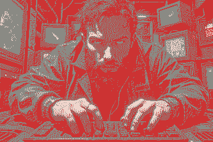
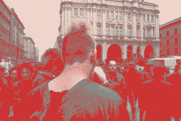

Who is typing?
Alég Lutohin – an educator and researcher with a focus on digitalization of historical memory.
What is CLI-izdat?
CLI-izdat AKA cli_izdat is an ongoing study of the aesthetic and technological relationships between Eastern Bloc samizdat practices and modern command-line interfaces.
Visual and text references are collected in the are.na channel of the same name.
Other Projects
- Forgot Your Protest?
- MemoActs Educational Programm
- More at memosynth.net

